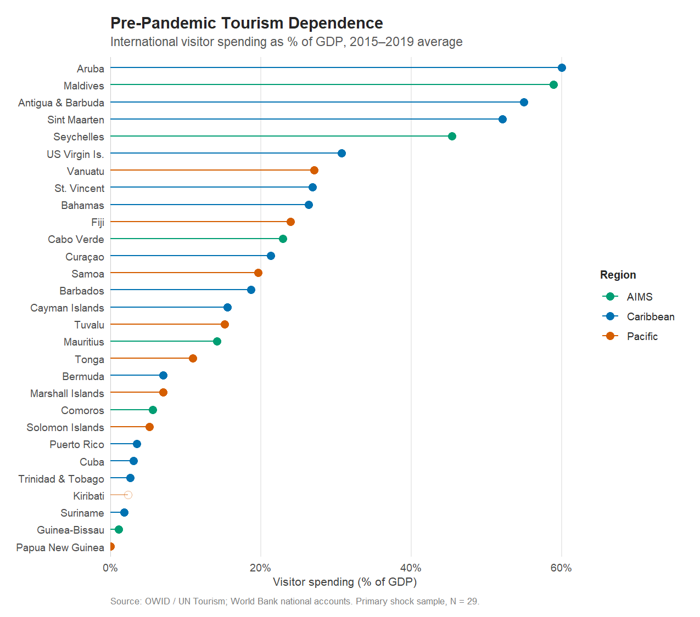
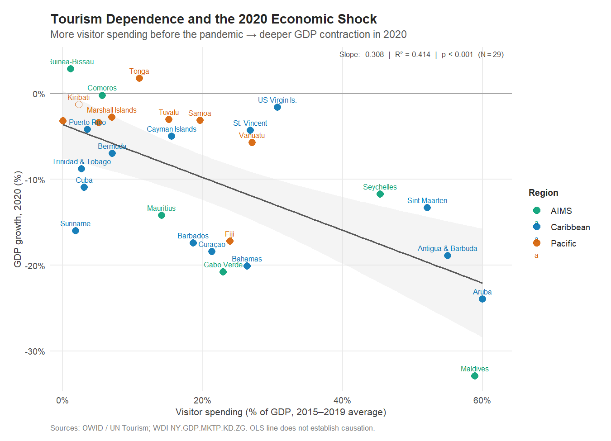
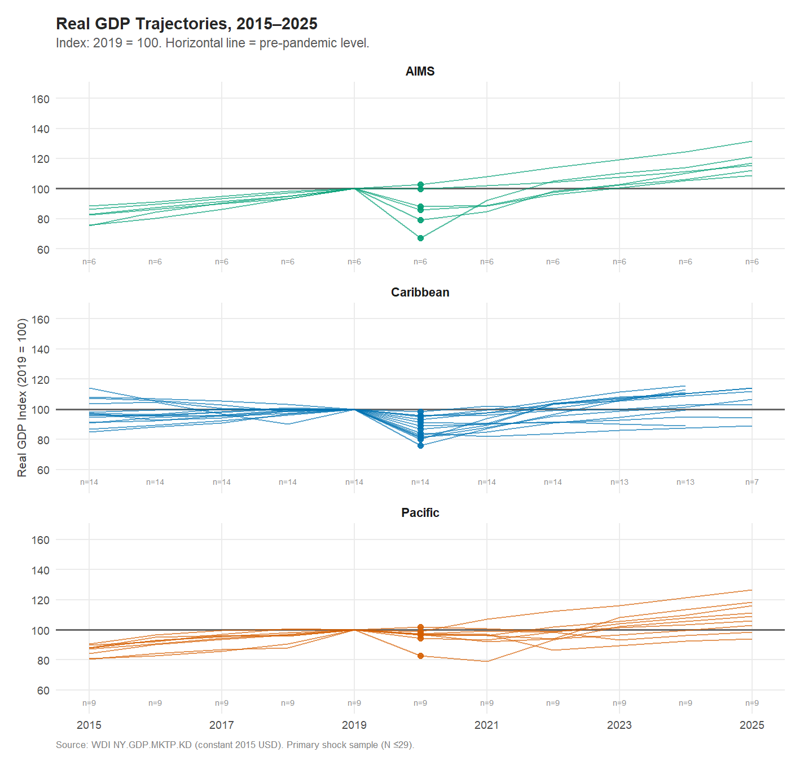

Island Time, Interrupted
Tourism Dependence and the COVID Cliff in Small Island Developing States
When Tourism Stops
For most countries, a pandemic is a health crisis with economic side effects. For a small island economy built on international tourism, the equation is different. When COVID-19 closed borders in early 2020 and global arrivals fell by roughly 74 percent, the interruption of travel was not a disruption to one sector of the economy — in many places, it was closer to the interruption of the economy itself.
The question this analysis asks is a simple one: Were small island economies that depended more on international tourism before the pandemic more severely affected in 2020?
The answer, for the best available measure of tourism dependence, is yes. But the more interesting question — what happened next — turns out to have a considerably less tidy answer.
Who Was Most Exposed?
Not all island economies are equally dependent on tourism. The range, even within a 29-economy sample drawn from the Caribbean, Pacific, and AIMS regions, is striking.
At one extreme: Aruba and Maldives, with international visitor spending averaging roughly 60 and 59 percent of GDP over 2015–2019. Antigua and Barbuda and Sint Maarten were not far behind. At the other end: Guinea-Bissau, Trinidad and Tobago, Suriname — economies where tourism is a real sector but not the economic foundation.
An economy where foreign visitors account for 60 percent of GDP is structurally different from one where they account for 5 percent. When travel stopped, those differences mattered enormously.
Measuring Exposure
Two indicators of tourism dependence are used in this analysis, and they are not interchangeable.
The primary measure is international visitor spending as a share of GDP — how much international tourists spend in a country relative to the size of that country’s economy. This comes from UN Tourism statistics processed by Our World in Data and is available for all 29 economies in the primary sample. High values mean a large fraction of economic activity depends directly on people arriving from abroad.
The complementary measure is international tourism receipts as a share of total exports, from the World Bank’s World Development Indicators. This asks a related but different question: how important are tourism earnings relative to everything else the economy sells to the rest of the world? For countries with limited other exports, the two measures can tell very different stories about the same destination.
The analysis uses the first measure as primary and the second as a check. The comparison between them turns out to be part of the story — not just methodological housekeeping.
The 2020 Shock

The slope is visible without the regression line: across these 29 economies, the more of an economy’s activity depended on international visitors before the pandemic, the worse 2020 GDP growth tended to be.
Fitting a simple regression, each additional percentage point of visitor spending relative to GDP was associated with roughly 0.31 percentage points of additional contraction in 2020. The relationship explains about 41% of the variation in 2020 growth rates across the sample (R² = 0.414, p < 0.001). For a bivariate cross-sectional relationship across 29 diverse economies, that is a substantial share of explained variation.
The Maldives and what it tells us
The Maldives deserves a specific note. With visitor spending averaging about 59 percent of GDP and a GDP contraction of roughly 33 percent in 2020, it sits at the far extreme of both axes — the most tourism-dependent economy in the sample and the most severely affected. It is also the most statistically influential single observation.
Excluding the Maldives reduces R² from 0.414 to approximately 0.31, but the negative association remains statistically significant (p = 0.002). The finding does not depend on a single outlier. The Maldives is an unusually clear example of the relationship, not the reason it exists.
The result also holds when the 2017–2019 average replaces the 2015–2019 baseline (slope = -0.32, R² = 0.428) and when the analysis is restricted to the 24 economies with data for both tourism indicators (R² = 0.489).
This is an observational analysis of 29 economies. It documents an association, not a mechanism. Pre-existing fiscal pressures, the timing of border closures, domestic economic alternatives, and many other factors are not controlled for. The pattern is consistent with the economic logic of tourism dependence, but consistent-with is not the same as explained-by.
The other indicator tells a more complicated story
The World Bank’s tourism receipts measure — receipts as a share of total exports — produces weaker and less consistent results. In the full WDI sample of 35 economies, the relationship falls just short of conventional statistical thresholds (R² = 0.1, p = 0.064). In the 24-economy common sample — the same countries analyzed with both indicators — the relationship is more evident but explains considerably less of the variation (R² = 0.233).
This matters. The choice of how to measure tourism dependence is not a purely technical question. The two indicators cover different countries, divide by different denominators, and in the common sample produce R² values of 0.489 versus 0.233. Whether pre-pandemic tourism dependence appears strongly associated with the 2020 shock depends partly on how you measure it. The Technical Analysis documents all eight model specifications; none is hidden.
Recovery: Messier Than the Shock

By 2024, 21 of 28 economies with available data had returned to or exceeded their 2019 aggregate real GDP. The pattern for most of them looked something like a steep V: a sharp drop in 2020, a partial recovery in 2021, and a return to baseline within two or three years.
But counting heads at a single comparison year conceals a more complex picture.
Two kinds of recovery, and they’re not the same
Aggregate GDP and GDP per capita tell different stories, particularly in small island economies where population dynamics — emigration, population growth, aging — can move significantly over just a few years.
Of the 28 economies with 2024 real GDP data:
- 20 of 28 had recovered real GDP per capita to 2019 levels — one fewer than the aggregate count.
The gap between the two measures runs in both directions. Four economies — Seychelles, Antigua & Barbuda, Papua New Guinea, Vanuatu — had restored total GDP but not GDP per capita by 2024. This pattern is consistent with population growth outpacing economic recovery: total output returned, but per-person output had not. Three economies — Curaçao, Marshall Islands, Tuvalu — showed the opposite: GDP per capita had recovered, but total output had not. This is consistent with declining or emigrating populations, where per-person output can rise even when the aggregate shrinks.
7 economies had not recovered aggregate GDP to 2019 levels by 2024: Suriname, Cuba, Tuvalu, Trinidad & Tobago, Marshall Islands, Curaçao, Solomon Islands. Several of these — particularly Cuba, Suriname, and Trinidad and Tobago — faced economic difficulties that predated the pandemic.
Tourism dependence did not predict the recovery
Here the story departs from what the shock analysis might suggest. Among these 28 economies, pre-pandemic tourism dependence was not significantly associated with where an economy stood relative to its 2019 GDP level in 2024 (Pearson r = 0.21, p = 0.275). Pre-pandemic tourism dependence, while informative about initial exposure, tells us relatively little about where an economy stood four years later.
The reason this relationship is absent is worth understanding, not dismissing. The same mechanism that drove the initial shock also drove the subsequent rebound. Economies where visitor spending accounts for 50–60 percent of GDP contracted sharply in 2020 when travel stopped — and then recovered sharply from 2021 onward as travel resumed. Looking only at where they ended up in 2024 relative to 2019, the two phases roughly cancel out.
This is not evidence that tourism-dependent islands are resilient. It is evidence that aggregate GDP at a single comparison year is an incomplete measure of what an economy actually experienced between 2020 and 2024. The employment lost, the debt accumulated to bridge the gap, the businesses that did not survive: none of that is captured in whether a GDP index crossed the 100 threshold.
The Central Argument
The 2020 economic shock in small island developing states was not random, and it was not uniform. It tracked — with considerable regularity across three ocean regions — how much of an economy’s activity depended on international visitors.
That association is strong enough to be visible in the data, stable across different baseline windows and sample compositions, and not dependent on a single influential observation. It is consistent with the economic structure of tourism dependence. What it cannot do, by itself, is explain the specific trajectory of any particular economy — those depend on fiscal buffers, policy choices, and factors that a simple cross-sectional comparison cannot untangle.
The recovery, by contrast, was not neatly structured by prior exposure. Most island economies regained their pre-pandemic GDP levels within a few years. Some had not by 2024. The differences appear to reflect country-specific circumstances that tourism dependence alone does not predict.
Two things emerge from this. First, pre-pandemic visitor spending as a share of GDP is a meaningful indicator of economic exposure to travel-disruption shocks. Second, the size of an economy’s initial shock tells you surprisingly little about where it ends up four years later.
The full picture requires looking at individual trajectories, not just the cross-sectional pattern.
Technical analysis and model results: Analysis
Indicator definitions and data sources: Data Dictionary
Research design and reproducibility: Methodology
Analysis conducted in R 4.4.1. Data retrieved November 2026.